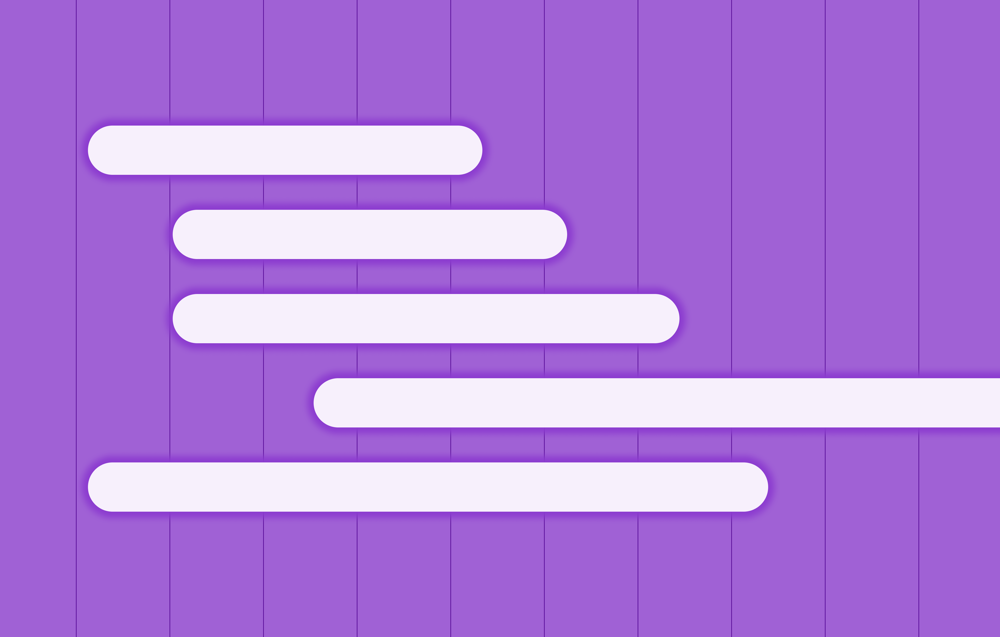

<!DOCTYPE html>
<html lang="en">

<head>
	<title>Emily Porat | Product roadmap</title>
	<link rel="stylesheet" type="text/css" href="styles/global.css">
	<link rel="stylesheet" type="text/css" href="styles/global-mobile.css">
	<link rel="stylesheet" type="text/css" href="styles/nav.css">
	<link rel="stylesheet" type="text/css" href="styles/projects.css">
	<script src="https://ajax.googleapis.com/ajax/libs/jquery/1.9.1/jquery.min.js"></script>
	<link rel="icon" type="image/x-icon" href="pics/favicon.svg"/>
	<!-- Icons -->
	<script defer src="https://use.fontawesome.com/releases/v5.13.0/js/all.js"></script>
	<script defer src="https://use.fontawesome.com/releases/v5.13.0/js/v4-shims.js"></script>
	<!-- Global site tag (gtag.js) - Google Analytics -->
	<script async src="https://www.googletagmanager.com/gtag/js?id=UA-119412150-1"></script>
	<script>
		window.dataLayer = window.dataLayer || [];
		function gtag(){dataLayer.push(arguments);}
		gtag('js', new Date());

		gtag('config', 'UA-119412150-1');

      // load other reused files
      $(function() {
      	$('#nav').load('http://emilyporat.com/nav.html');
      	$('#footer').load('http://emilyporat.com/footer.html');
      });
  </script>
</head>

</html>
<body class="preload">
	<meta name="viewport" content="width=device-width">
	<div id="nav"></div>
	<div id="arrow-up" onclick="slideUp()"><i class="fa fa-angle-up"></i></div>	

	<div id="modal_background">
		<div id="prompt" class="pw_prompt">
			<h4 style="margin-bottom: 20px">Password protected project</h4>
			<label>Password:</label>
			<input id="pw_prompt_input1" type="password"></input>
			<button class="secondary-btn" onclick="checkPassword()">Submit</button>
		</div>
	</div>

	<div class="full-width" style="background-color: var(--purple);">
		<div class="title-wrapper animate-reveal animate-first">
			<div class="title">
				<div>
					<h4 style="margin-bottom: 10px">Orchard • 2022-23</h4>
					<h1 style="color: black">Product roadmap</h1>
					<p class="p-XL">Collaborated with product to define a vision and roadmap for a more tightly integrated platform product.</p>
				</div>
			</div>
		</div> 

		
	</div>


	<div class="panel">
		<div class="body right">
			<div class="context-summary">
				<h2>Project Overview</h2>

				<p class="p-XL">
					Partnered with a PM to define a 6-month UX vision + 2023 product roadmap for better integrating Orchard's primary platform products following the acqusition of a smaller company.
				</p>
				
				<div class="space"></div>

				<div class="context-specifics">

					<div class="context-description">
						<h4>Length</h4>
						<p>Nov 2022-Feb 2023</p>
					</div> 
				
					<div class="context-description">
						<h4>Team</h4>
						<p>Me and a lead PM led the initiative, many others contributed</p>
					</div> 
				</div>

				<div class="space"></div>
				
				<h3>Background</h3>
				<ul>
					<li>Orchard offers streamlined services and tooling for consumers looking to buy and/or sell their home. Orchard has its own Brokerage, Title, and Mortgage sub-companies; each department's teams utilize a different set of platform tools.</li>
					<li>In 2022, Orchard acquired a real estate transaction task-management software company called Preclose, which we rebranded to "Deal Hub" and slowly rolled out to all internal teams.</li>
					<li>Before the acquisition, internal teams relied on Salesforce for tasking, and our in-house software platform, Atlas, for complex workflows.</li>
				</ul>
				
				<div class="space"></div>

				<h3>The problem</h3>
				<p>
					While Deal Hub provided <i>much</i> better tasking functionality for queue-based employees, it created a new issue — major overlap with Atlas and Salesforce data. Users didn't know where to go for what information, or which system to trust. It was clear we needed to unify the platform into one singular source of truth (or at least what felt like one singular source of truth).
				</p>

				<div class="space"></div>

				<h3>Approach</h3>
				<p>
					<ul>
						<li>Before this initiative kicked off, I led a cross-functional group in defining unique design principles for the platform - these were meant to aid in decision-making and summarize what sets apart Orchard's internal tools.</li>
						<li>My PM partner and I then worked with leaders across PDE to summarize the UX vision for the platform and presented that vision to the rest of the team. This work built off vision work my manager had done several months ago on the long-term (2-3 year) vision.</li>
						<li>Once aligned on vision, my PM partner and I conducted 30+ user interviews (shallow & wide), covering all platform user groups, so that we had a clear picture of job responsibilities, current tool usage, and primary pain points.</li>
						<li>We synthesized those findings and used our insights to feed into a formal product roadmap for 2023.</li>
						<li>Our engineering counterparts also provided a technical vision to go along with the product roadmap.</li>
					</ul>
				</p>
			</div>

		</div>
	</div>

	  	
  	<div id="footer"></div>
  	</meta>
  </body>

  <script src="js/general.js"></script>

</html>